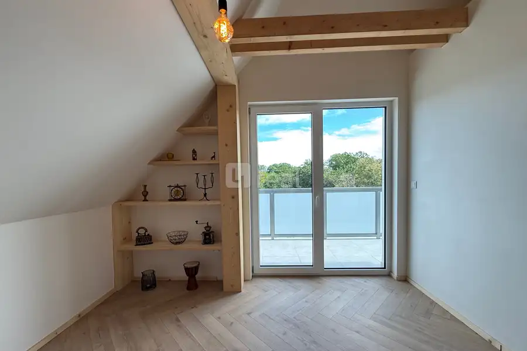
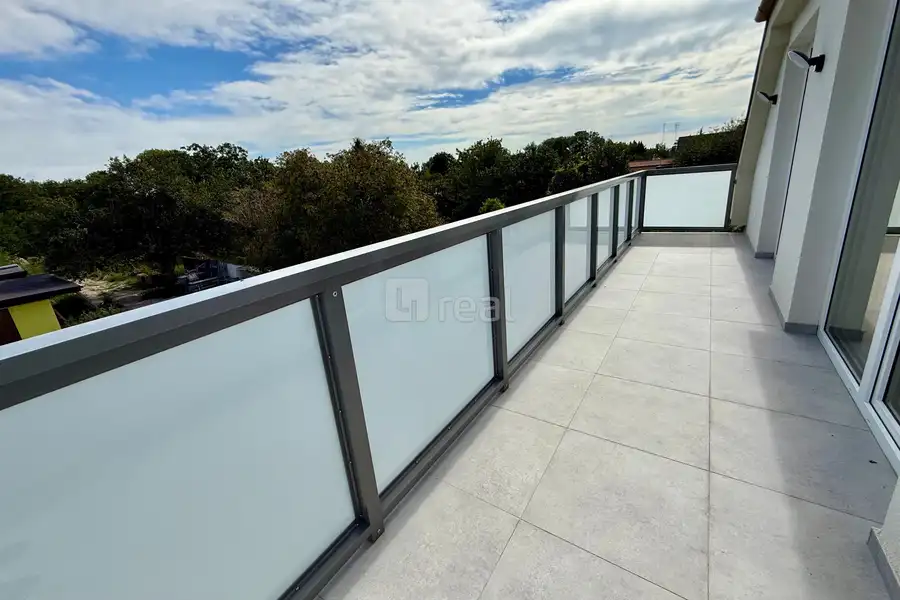
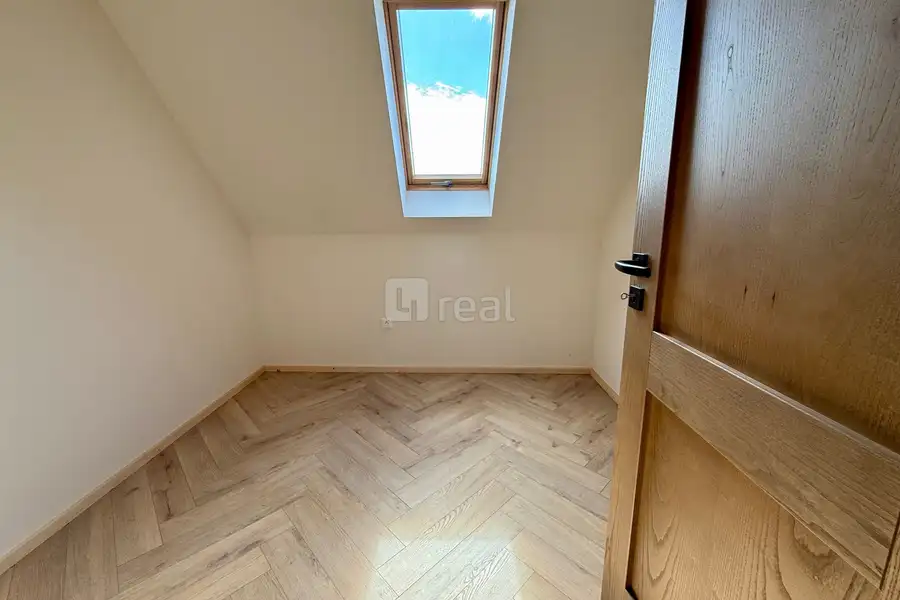
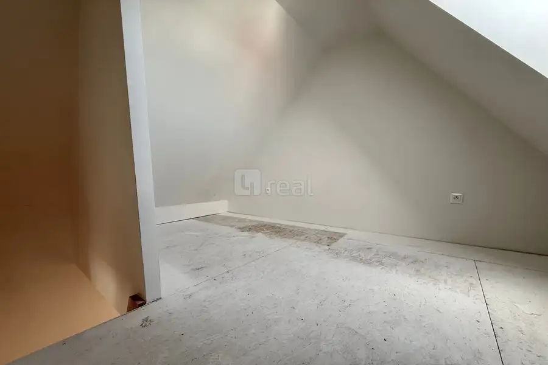
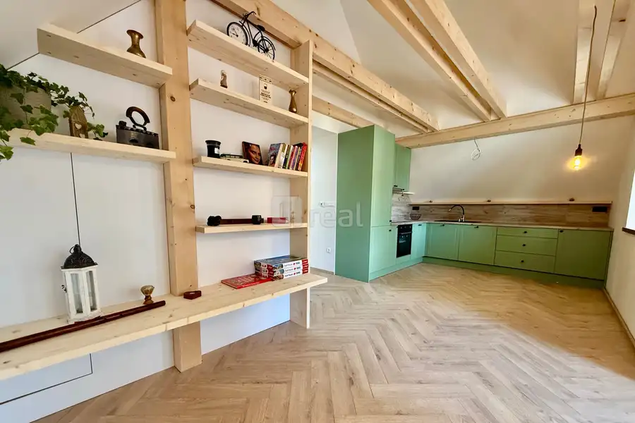
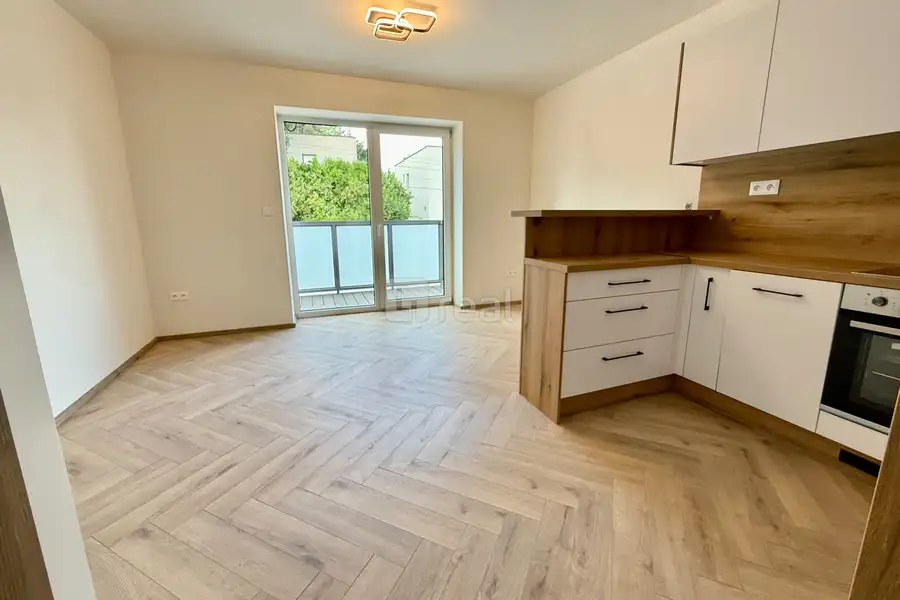
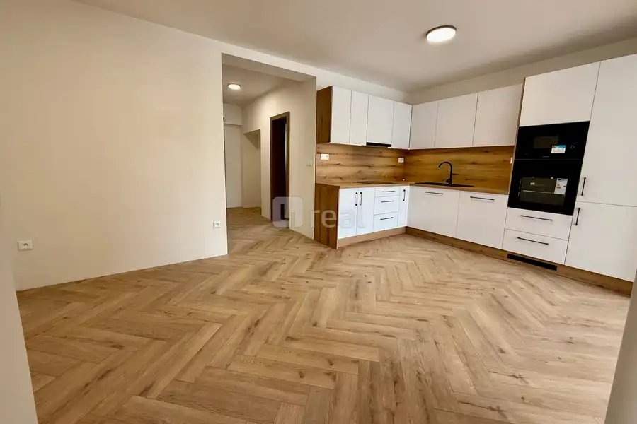

4REAL.SK 3-izbový byt 60 m² + veľký balkón | trámy | podkrovie | Ivanka pri Dunaji
Ivanka pri Dunaji




- Dispozícia3-izbový
- Plocha60 m²
- Poschodie2. z 2
- StavKompletná rekonštrukcia
- VlastníctvoOsobné
O nehnuteľnosti
4REAL.SK ponúka na predaj 3-izbový byt s úžitkovou plochou 60 m² a balkónom s výmerou 9 m², situovaný v pokojnej rezidenčnej časti Ivanky pri Dunaji.Byt zaujme najmä vzdušnou dennou časťou s priznanými drevenými trámami, kuchyňou na mieru a elegantnou podlahou v dekore rybej kosti. Vďaka netradičnému riešeniu a podkrovnému priestoru má byt príjemný charakter a ponúka viac možností využitia než klasický byt.DISPOZÍCIA- vstupná chodba, 7 m²- priestranná obývacia izba prepojená s kuchyňou a jedálenskou časťou, 25 m2- samostatná spálňa s východom na balkón, 11 m² - spálňa so šatníkom, 8,7 m² - kúpeľňa, 5,5 m² - samostatné WC, 1,7 m² - balkón, 9 m² - podkrovný priestor vhodný ako pracovňa, herňa, hosťovská izba alebo úložný priestor.Denná časť je prirodzene presvetlená a drevené trámy spolu s podlahou v dekore rybej kosti vytvárajú útulnú a nadčasovú atmosféru.VYBAVENIE A BENEFITY- 60 m² podlahová plocha + 6 m² bonus pravovňa/herňa- veľký balkón 9 m²- klimatizácia Samsung WindFree- podlahové kúrenie- kuchynská linka na mieru- podlaha v dekore rybej kosti- priznané drevené trámy- podkrovný priestor s variabilným využitím- nábytok a spotrebiče podľa dohody / v cene bytu- možnosť dokúpenia parkovacieho státiaPREČO PRÁVE TENTO BYT?Ak hľadáte niečo iné než štandardný byt v novostavbe, tento priestor môže byť zaujímavou voľbou. Kombinácia drevených trámov, veľkorysej dennej časti, podkrovného priestoru, lodžie, klimatizácie a podlahového kúrenia vytvára bývanie s vlastným charakterom.Byt ponúka veľmi príjemné a praktické dispozičné riešenie s dôrazom na dostatok úložného priestoru, komfort a vzdušnosť. Veľkým benefitom bytu je príjemná vzdušná obývacia izba s jedálňou s podkrovnými trámami a vyšším stropom.LOKALITA – IVANKA PRI DUNAJIIvanka pri Dunaji ponúka príjemnú kombináciu pokojného bývania, zelene a dobrej dostupnosti Bratislavy. V obci a jej okolí nájdete kompletnú občiansku vybavenosť, školy, škôlky, obchody, služby, reštaurácie, možnosti športového vyžitia aj príjemné miesta na prechádzky a cyklistiku.Výhodou je tiež dobré dopravné napojenie na Bratislavu a blízkosť letiska.CENA, PARKOVANIECena bytu: 279.990 €K bytu je možné dokúpiť vonkajšie parkovacie státie za 6 000 €.Nábytok a spotrebiče: v cene bytu.Možnosť financovania hypotekárnym úverom.Bližšie informácie v realitnej kancelárii.Zaujala vás táto ponuka, alebo zvažujete PREDAJ či PRENÁJOM vašej NEHNUTEĽNOSTI? Ponúkame vám 25 ROKOV SKÚSENOSTÍ, OSOBNÝ PRÍSTUP ku každému klientovi, KVALITNÚ PREZENTÁCIU a ÚČINNÝ MARKETING a vy tak môžete využiť čas na vaše záľuby a vašich blízkych.KONTAKT:Ing. Michal Heteš0908 777 477hetes@4real.sk
Parametre
- Cena vrátane energií
- Nie
- Druh
- 3 izbový byt
- Dátum zverejnenia
- 22. 09. 2026
- Energetický certifikát budovy
- nie je
- Podlažie
- 2
- Počet balkónov
- 1
- Počet izieb / miestností
- 3
- Počet nadzemných podlaží
- 2
- Počet spální
- 2
- Počet vonkajších parkovacích miest
- 1
- Stav nehnuteľnosti
- Kompletná rekonštrukcia
- Typ
- Predaj
- Typ konštrukcie
- Tehlová
- Vlastníctvo
- Osobné
- Vybavenie
- Balkón, Terasa, Krb, Vonkajšie parkovacie miesto
- Vykurovanie
- Podlahové, Klimatizacia
- Úžitková plocha
- 60 m²
Kde to je


Mohlo by Vás zaujímať

BytNové 252 500 €4REAL.SK 3-izbový byt 70 m² + lodžia | trámy | podkrovie | Ivanka pri Dunaji Ivanka pri Dunaji 3-izbový70 m²2. podlažie
BytNové 232 000 €4REAL.SK 2-izbový byt 42 m² + 2 balkóny, klimatizácia, podlahové kúrenie | Ivanka pri Dunaji Ivanka pri Dunaji 2-izbový42 m²1. podlažie
BytNové 287 400 €4REAL.SK 3-izbový byt 74 m² + lodžia 12m², klimatizácia, podlahové kúrenie | Ivanka pri Dunaji Ivanka pri Dunaji 3-izbový74 m²1. podlažie